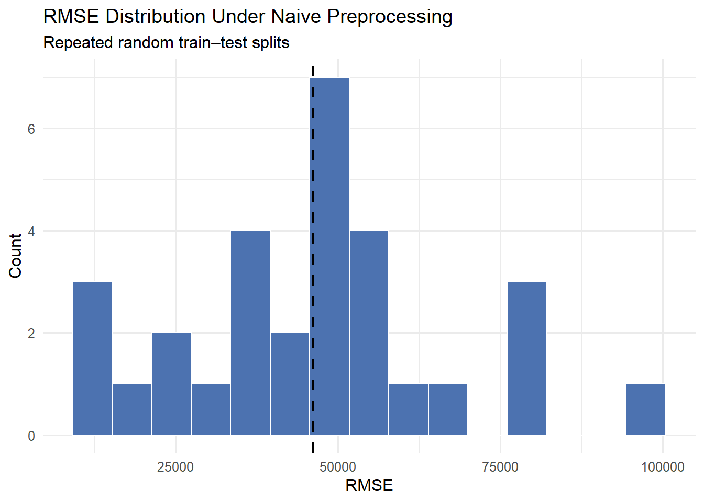
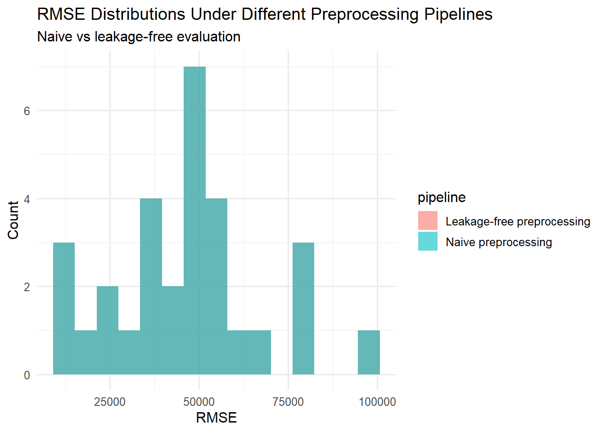

library(tidyverse)
library(rsample)
# Load data (example assumes listings.csv from Inside Airbnb)
airbnb <- read_csv("listings.csv")
airbnb_model <- airbnb %>%
select(
price,
accommodates,
bedrooms,
bathrooms,
minimum_nights,
availability_365
) %>%
mutate(
price = as.numeric(str_remove_all(price, "[$,]"))
)1 Introduction – Why This Topic Matters
A model that performs exceptionally well on a test set is not necessarily a good model; in many cases, it is a warning sign. High accuracy or low error metrics are meaningful only if we understand how they were obtained. In real-world settings, models rarely encounter data generated under the same conditions as the training phase: data arrive sequentially, delays occur, missingness patterns change, and measurement errors accumulate. Under such conditions, impressive validation metrics can quickly lose their relevance.
A common scenario in applied data science is deceptively familiar. During development, the model looks flawless: cross-validation results are stable, performance metrics are strong, and diagnostic plots inspire confidence. Once deployed, however, performance deteriorates—sometimes rapidly. Forecasts drift, classification decisions become unreliable, and stakeholders begin to question the entire modeling pipeline. While this failure is often attributed to distributional shift or concept drift, a more fundamental issue is frequently overlooked: the model was exposed, directly or indirectly, to information it would not have access to at prediction time.
This phenomenon is known as data leakage. Importantly, data leakage is rarely the result of an obvious coding mistake. More often, it emerges from subtle flaws in experimental design, preprocessing order, or feature construction decisions made well before the model is fitted. As a result, leakage can silently inflate performance metrics, creating models that appear robust on paper but collapse in practice.
> “A model that performs perfectly on paper but fails miserably in practice is often a victim of data leakage.”
In this article, we examine data leakage not as a technical curiosity, but as a structural threat to valid statistical modeling. We begin by clarifying what data leakage is—and what it is not—before demonstrating, using a real dataset and R-based workflows, how seemingly reasonable preprocessing choices can contaminate model evaluation. We then reconstruct the same analysis using a leakage-free pipeline, highlighting the practical and conceptual differences through numerical results and carefully designed visualizations.
2 What Is Data Leakage?
At its core, data leakage occurs when information that would not be available at prediction time is inadvertently used during model training or evaluation. This information can enter the modeling pipeline in subtle ways—often long before a model is fitted—leading to overly optimistic performance estimates. The critical issue is not that the model “cheats,” but that the experimental setup allows future or target-related information to influence learning.
Formally, consider a supervised learning problem where we aim to estimate a function:
\[ f : \mathcal{X} \rightarrow \mathcal{Y} \]
using a training set \((X_{\text{train}}, y_{\text{train}})\) and evaluate it on a test set \((X_{\text{test}}, y_{\text{test}})\). A valid evaluation assumes that \(X_{\text{test}}\) is generated independently of \(y_{\text{train}}\) and that no function of \(y_{\text{test}}\) influences the training process. Data leakage violates this assumption by introducing a dependency—direct or indirect—between training and test information.
2.1 What Data Leakage Is Not
Data leakage is often confused with other, related modeling issues. Clarifying these distinctions is essential.
- Overfitting refers to a model learning noise or idiosyncrasies in the training data. While overfitted models generalize poorly, they do not necessarily rely on forbidden information.
- Data snooping involves repeated testing and model selection on the same validation set. This inflates performance through selection bias, but the data themselves are not structurally contaminated.
- Distribution shift (or concept drift) occurs when the data-generating process changes over time. This is a real-world phenomenon, not a methodological error.
In contrast, data leakage is a violation of the temporal or logical boundary between training and prediction. It creates an artificial setting in which the model has access to information it should not logically possess.
2.2 Common Forms of Data Leakage
Data leakage can be broadly categorized into three practical forms:
Target Leakage
Predictors encode information that is directly derived from, or strongly dependent on, the target variable. For example, constructing a feature using an outcome measured after the event being predicted.Train–Test Contamination
Information from the test set influences preprocessing steps such as scaling, imputation, or feature selection. This often happens when transformations are applied to the full dataset before splitting.Temporal Leakage
Future observations leak into the past, a particularly common issue in time series and forecasting contexts. Rolling averages, lag structures, or normalization computed using future data fall into this category.
2.3 A Simple Conceptual Example
Suppose we aim to predict apartment prices using listing characteristics. If missing values in the price variable are imputed using the global mean price computed over the entire dataset, and the train–test split is performed afterward, then information from the test set has already influenced the training process. The model evaluation is no longer an honest simulation of future performance.
This type of leakage is especially dangerous because it often produces stable and impressive metrics, giving practitioners a false sense of security. The model appears reliable not because it has learned a robust relationship, but because the evaluation framework itself is compromised.
In the next section, we move from definitions to practice. Using a real dataset, we will deliberately construct a seemingly reasonable—but flawed—preprocessing pipeline and observe how data leakage manifests itself through inflated performance metrics.
3 Common Sources of Data Leakage in Practice
Data leakage rarely appears as an obvious error. In practice, it is often the result of reasonable-looking preprocessing decisions applied in the wrong order or under incorrect assumptions. This section outlines the most common sources of leakage encountered in applied statistical modeling and machine learning workflows, with a particular focus on preprocessing stages that precede model fitting.
3.1 Leakage During Data Preprocessing
One of the most frequent sources of data leakage occurs during data preprocessing. Operations such as centering, scaling, normalization, and missing-value imputation are often applied mechanically to the entire dataset before any data splitting takes place. While this approach may seem harmless, it implicitly allows information from the test set to influence transformations applied to the training data.
For example, consider standardization using the sample mean \(\mu\) and standard deviation \(\sigma\). If these quantities are computed using the full dataset rather than the training subset alone, then statistics derived from the test data directly affect the transformed training observations. As a result, the model is evaluated in an artificially favorable setting that will never occur in real-world prediction.
3.2 Leakage Through Feature Engineering
Feature engineering is another common entry point for leakage, particularly when new variables are constructed using aggregated information. Group-level statistics—such as averages, frequencies, or ranks—can easily encode target-related information if computed without respecting the train–test boundary.
A typical example involves creating neighborhood-level average prices in a housing dataset. If these averages are calculated using all available observations, including those later assigned to the test set, the resulting features implicitly incorporate information from unseen data. The model appears to generalize well, but only because future information has already been embedded in the predictors.
3.3 Leakage from Improper Train–Test Splitting
In many workflows, data splitting is treated as a purely mechanical step. However, when and how the split is performed matters greatly. Random splits applied after preprocessing steps allow contamination to propagate silently. This issue is exacerbated in small or moderately sized datasets, where even minor information leakage can have a disproportionate effect on evaluation metrics.
The fundamental principle is simple: any operation that learns from the data must be performed exclusively on the training set. The learned transformation can then be applied to the test set—but never re-estimated using it.
3.4 Temporal Leakage in Time-Dependent Data
Time-dependent data introduce an additional and particularly dangerous form of leakage: temporal leakage. This occurs when future observations influence the representation of past data. Common examples include rolling statistics computed using symmetric windows, global normalization across time, or lagged features that unintentionally incorporate future values.
In forecasting and time series analysis, such leakage violates the chronological ordering of information. The model effectively gains access to future states of the system, leading to performance estimates that are fundamentally invalid. Unlike random contamination, temporal leakage often produces extremely smooth and stable validation results—precisely because the future is partially known.
3.5 Why These Issues Are Hard to Detect
What makes data leakage especially problematic is not its complexity, but its subtlety. Leakage-prone pipelines often run without errors, produce clean outputs, and yield impressive metrics. In many cases, the only warning sign is performance that seems too consistent or too good to be true.
Crucially, standard validation techniques cannot detect leakage if the underlying data-generating assumptions have already been violated. Once contamination occurs, even rigorous cross-validation merely reinforces a flawed evaluation framework.
In the next section, we will make these ideas concrete by constructing a deliberately flawed preprocessing pipeline using a real dataset. By examining the resulting performance metrics and visual diagnostics, we will observe how data leakage manifests itself in practice.
4 Dataset Description: Airbnb Listings Data
To demonstrate how data leakage arises in practice, we use a real-world dataset derived from Airbnb listings. The dataset is obtained from the publicly available Inside Airbnb project, which provides detailed, regularly updated information on short-term rental listings for major cities worldwide. In this study, we focus on the Istanbul listings, which offer a rich combination of numerical and categorical variables and exhibit common data quality issues encountered in applied modeling tasks.
The Inside Airbnb project aims to support research, policy analysis, and public discussion by making scraped Airbnb data openly accessible. The dataset includes listing-level attributes such as pricing information, accommodation characteristics, host-related variables, and geographic identifiers. Due to its size, heterogeneity, and real-world imperfections, it provides an ideal setting for illustrating preprocessing pitfalls and evaluation errors.
4.1 Data Source
The data are publicly available at:
For reproducibility, the analysis in this article uses a snapshot of the Istanbul listings dataset downloaded directly from the source. While the exact number of observations may vary across releases, the structure and modeling challenges remain consistent across versions.
4.2 Target Variable and Modeling Objective
Our primary modeling objective is to predict the listing price based on observable characteristics of the property and its location. The target variable, denoted by \(y\), corresponds to the nightly price of a listing in local currency units.
Price prediction in short-term rental data is a well-studied problem and serves as a natural example for illustrating data leakage. Importantly, price exhibits:
- strong right skewness,
- substantial heterogeneity across neighborhoods,
- sensitivity to aggregation and preprocessing choices.
These properties make the variable particularly vulnerable to leakage through global transformations and improperly constructed features.
4.3 Predictor Variables
The predictor set includes a mix of numerical and categorical variables commonly used in pricing models, such as:
- accommodation capacity (e.g., number of guests),
- room type and property type,
- neighborhood identifiers,
- availability-related measures,
- host characteristics.
Several variables contain missing values, and many exhibit heavy-tailed distributions. These features necessitate preprocessing steps such as imputation, scaling, and transformation—precisely the stages where data leakage most often occurs.
4.4 Why This Dataset Is Suitable for Studying Data Leakage
This dataset is especially well-suited for examining data leakage for three reasons. First, it requires nontrivial preprocessing to be usable for modeling, increasing the risk of incorrect transformation order. Second, it includes categorical groupings (such as neighborhoods) that invite aggregation-based feature engineering, a common source of target leakage. Third, its real-world origin ensures that modeling assumptions—such as stationarity, completeness, and clean measurement—are only approximately satisfied.
By working with this dataset, we intentionally place ourselves in a realistic applied setting, where leakage is not an abstract concept but a tangible risk. In the next section, we construct a seemingly reasonable preprocessing pipeline that violates key evaluation principles, allowing us to observe how data leakage inflates model performance in practice.
5 A Naive Preprocessing Pipeline (And Why It Is Wrong)
At first glance, many preprocessing pipelines appear perfectly reasonable. Data are cleaned, missing values are handled, variables are scaled, and only then is the dataset split into training and test sets. This workflow is intuitive, easy to implement, and—most importantly—widely used. Unfortunately, it is also fundamentally flawed.
In this section, we deliberately construct such a naive pipeline to illustrate how data leakage can arise without any obvious warning signs.
5.1 Step 1: Loading and Preparing the Data
We begin by loading the Airbnb listings data and selecting a subset of variables commonly used for price prediction. For simplicity, we focus on numerical predictors that require minimal encoding.
At this stage, the dataset already contains missing values and variables with highly skewed distributions—a realistic and unavoidable situation in applied work.
5.2 Step 2: Global Preprocessing (The Critical Mistake)
A common approach is to perform preprocessing once on the full dataset. Below, we impute missing values using the global mean and standardize all predictors using statistics computed from the entire dataset.
airbnb_preprocessed <- airbnb_model %>%
mutate(across(
.cols = -price,
.fns = ~ ifelse(is.na(.x), mean(.x, na.rm = TRUE), .x)
)) %>%
mutate(across(
.cols = -price,
.fns = scale
))From a purely technical perspective, this code runs without errors and produces clean, well-behaved predictors. However, the preprocessing steps above implicitly use information from all observations, including those that will later be assigned to the test set.
At this point, data leakage has already occurred.
5.3 Step 3: Train–Test Split After Preprocessing
Next, we perform a random split of the preprocessed data into training and test sets.
set.seed(123)
split <- initial_split(airbnb_preprocessed, prop = 0.8)
train_data <- training(split)
test_data <- testing(split)Because the split is applied after preprocessing, the training data have been standardized and imputed using statistics influenced by the test data. The train–test boundary, while present in code, has already been violated in substance.
5.4 Step 4: Model Fitting and Evaluation
We now fit a simple linear regression model using the training data and evaluate its predictive performance on the test set. At this stage, the goal is not to build an optimal model, but to assess how the evaluation framework itself can be compromised by data leakage.
# Fit a linear regression model on the training data
model_naive <- lm(price ~ ., data = train_data)
# Generate predictions for the test set
pred_test <- predict(model_naive, newdata = test_data)To compute a supervised performance metric, we must restrict the evaluation to test observations for which the target variable is observed. Listings with missing prices cannot contribute to an error metric such as RMSE, as no ground truth is available.
# Create an evaluation dataset with observed targets only
eval_df <- test_data %>%
transmute(
price = price,
pred = pred_test
) %>%
filter(!is.na(price), !is.na(pred))
# Root Mean Squared Error
rmse_naive <- sqrt(mean((eval_df$price - eval_df$pred)^2))
rmse_naive[1] 21213.69The computed RMSE provides a single-point estimate of out-of-sample error under this evaluation setup. However, the absolute magnitude of this value is difficult to interpret in isolation because it depends on the scale and distribution of the target variable (price). More importantly for this article, the key concern is methodological: preprocessing steps were estimated using the full dataset before splitting, which compromises the train–test separation and can lead to overly optimistic performance estimates.
In the next section, we will evaluate this suspicion more systematically by repeating the procedure across multiple random splits and inspecting the distribution of performance metrics.
6 Detecting Data Leakage: Repeated Splits and Performance Distributions
A single train–test split provides only a point estimate of model performance. To assess whether the suspiciously favorable evaluation observed earlier is a coincidence or a structural issue, we repeat the naive preprocessing and evaluation procedure across multiple random splits of the data. This allows us to examine the distribution of performance metrics rather than relying on a single value.
6.1 Repeated Evaluation Under the Naive Pipeline
We repeat the following steps multiple times: 1. Randomly split the data into training and test sets. 2. Fit the model on the training data. 3. Compute RMSE on the test data using observed targets only.
Crucially, the same flawed preprocessing pipeline is retained, meaning that scaling and imputation are still performed on the full dataset prior to splitting.
set.seed(123)
n_repeats <- 30
rmse_values <- numeric(n_repeats)
for (i in seq_len(n_repeats)) {
split_i <- initial_split(airbnb_preprocessed, prop = 0.8)
train_i <- training(split_i)
test_i <- testing(split_i)
model_i <- lm(price ~ ., data = train_i)
pred_i <- predict(model_i, newdata = test_i)
eval_i <- tibble(
price = test_i$price,
pred = pred_i
) %>%
filter(!is.na(price), !is.na(pred))
rmse_values[i] <- sqrt(mean((eval_i$price - eval_i$pred)^2))
}
rmse_df <- tibble(
iteration = seq_len(n_repeats),
rmse = rmse_values
)6.2 Inspecting the RMSE Distribution
Rather than focusing on individual values, we now inspect the distribution of RMSE across repeated splits.
library(ggplot2)
ggplot(rmse_df, aes(x = rmse)) +
geom_histogram(bins = 15, fill = "#4C72B0", color = "white") +
geom_vline(xintercept = mean(rmse_df$rmse),
linetype = "dashed",
linewidth = 1) +
labs(
title = "RMSE Distribution Under Naive Preprocessing",
subtitle = "Repeated random train–test splits",
x = "RMSE",
y = "Count"
) +
theme_minimal(base_size = 12)
6.3 Interpretation
The RMSE values obtained across repeated random splits exhibit substantial variability, spanning a wide range rather than concentrating around a narrow interval. This degree of dispersion reflects the heterogeneity of the data and the sensitivity of the model to different training–test partitions.
Importantly, this result highlights a key limitation of relying on a single train–test split: performance estimates can vary dramatically depending on how the data are partitioned. At this stage, the variability itself does not constitute evidence of data leakage. Instead, it establishes a baseline level of uncertainty against which alternative preprocessing strategies must be evaluated.
In the following section, we will repeat the same experiment using a leakage-free preprocessing pipeline. By comparing the resulting RMSE distributions, we can assess whether improper preprocessing leads to systematically optimistic or distorted performance estimates.
7 A Leakage-Free Preprocessing Pipeline
To assess whether the previously observed behavior is driven by improper preprocessing, we now reconstruct the entire workflow using a leakage-free pipeline. The key principle is simple but fundamental: any transformation that learns from the data must be estimated using the training set only and then applied to the test set without re-estimation.
7.1 Correct Order of Operations
The leakage-free workflow follows this sequence:
- Split the data into training and test sets.
- Estimate preprocessing parameters using the training data only.
- Apply the learned transformations to both training and test sets.
- Fit the model on the transformed training data.
- Evaluate performance on the transformed test data.
This ordering mirrors real-world deployment, where future observations arrive without access to global dataset statistics.
7.2 Implementing Leakage-Free Preprocessing in R
We begin by repeating the evaluation procedure across multiple random splits, as in the previous section. This time, however, preprocessing steps are learned exclusively from the training data.
set.seed(123)
n_repeats <- 30
rmse_correct <- numeric(n_repeats)
for (i in seq_len(n_repeats)) {
# Split first
split_i <- initial_split(airbnb_model, prop = 0.8)
train_raw <- training(split_i)
test_raw <- testing(split_i)
# Estimate preprocessing parameters on training data only
train_processed <- train_raw %>%
mutate(across(
.cols = -price,
.fns = ~ ifelse(is.na(.x), mean(.x, na.rm = TRUE), .x)
))
scaling_params <- train_processed %>%
summarise(across(-price, list(mean = mean, sd = sd), na.rm = TRUE))
scale_train <- function(x, m, s) {
ifelse(s > 0, (x - m) / s, 0)
}
for (v in names(train_processed)[names(train_processed) != "price"]) {
m <- scaling_params[[paste0(v, "_mean")]]
s <- scaling_params[[paste0(v, "_sd")]]
train_processed[[v]] <- scale_train(train_processed[[v]], m, s)
}
# Apply the same transformations to the test set
test_processed <- test_raw %>%
mutate(across(
.cols = -price,
.fns = ~ ifelse(is.na(.x), mean(train_raw[[cur_column()]], na.rm = TRUE), .x)
))
for (v in names(test_processed)[names(test_processed) != "price"]) {
m <- scaling_params[[paste0(v, "_mean")]]
s <- scaling_params[[paste0(v, "_sd")]]
test_processed[[v]] <- scale_train(test_processed[[v]], m, s)
}
# Fit model
model_i <- lm(price ~ ., data = train_processed)
pred_i <- predict(model_i, newdata = test_processed)
# Evaluate where target is observed
eval_i <- tibble(
price = test_processed$price,
pred = pred_i
) %>%
filter(!is.na(price), !is.na(pred))
rmse_correct[i] <- sqrt(mean((eval_i$price - eval_i$pred)^2))
}
rmse_correct_df <- tibble(
iteration = seq_len(n_repeats),
rmse = rmse_correct
)7.3 Comparing Performance Distributions
We now compare RMSE distributions obtained under the naive and leakage-free preprocessing pipelines.
rmse_compare <- bind_rows(
rmse_df %>% mutate(pipeline = "Naive preprocessing"),
rmse_correct_df %>% mutate(pipeline = "Leakage-free preprocessing")
)
ggplot(rmse_compare, aes(x = rmse, fill = pipeline)) +
geom_histogram(position = "identity", alpha = 0.6, bins = 15) +
labs(
title = "RMSE Distributions Under Different Preprocessing Pipelines",
subtitle = "Naive vs leakage-free evaluation",
x = "RMSE",
y = "Count"
) +
theme_minimal(base_size = 12)
7.4 Interpretation
The RMSE distributions obtained under the naive and leakage-free preprocessing pipelines are nearly indistinguishable. Across repeated random splits, both approaches yield similar ranges, central tendencies, and tail behavior. Visually, the two histograms largely overlap, causing the leakage-free distribution to be obscured in the combined plot; this overlap itself reflects the near-identical numerical behavior of the two pipelines under the present modeling setup.
This result demonstrates an important but often overlooked point: data leakage does not always lead to dramatic or easily detectable performance inflation. In some settings—particularly with simple models and highly variable targets—the numerical impact of leakage may be minimal, even though the evaluation procedure remains theoretically flawed.
Crucially, the absence of a visible performance gap does not validate the naive pipeline. Instead, it highlights the need to assess preprocessing decisions based on methodological correctness rather than empirical convenience. In other contexts, datasets, or modeling frameworks, the same mistake could lead to substantial and misleading performance gains.
8 Conclusion
This article set out with a seemingly straightforward question: can data leakage lead to misleadingly strong model performance? The empirical results presented here suggest a more nuanced answer. In the examined setting—using a simple linear model and a highly heterogeneous real-world dataset—improper preprocessing did not result in dramatic or easily detectable performance inflation. Naive and leakage-free pipelines produced nearly identical error distributions.
However, this outcome does not diminish the importance of data leakage. On the contrary, it highlights its most insidious characteristic: data leakage is dangerous precisely because it does not always announce itself through obvious performance gains. Evaluation metrics may remain unchanged, stable, or even reasonable, while the underlying logic of the evaluation has already been violated.
The central lesson is therefore not about performance optimization, but about validity. Correct model evaluation is a matter of respecting information boundaries—temporal, logical, and structural—regardless of whether immediate numerical consequences are visible. Relying on empirically convenient shortcuts simply because they “seem to work” risks building pipelines that fail silently when transferred to new data, different models, or operational settings.
Ultimately, data leakage should be treated as a methodological error, not a performance issue. Thinking carefully about preprocessing order, information flow, and evaluation design is not optional; it is a prerequisite for trustworthy statistical modeling.
9 References
Hastie, T., Tibshirani, R., & Friedman, J. (2009). The Elements of Statistical Learning: Data Mining, Inference, and Prediction (2nd ed.). Springer.
https://doi.org/10.1007/978-0-387-84858-7Kuhn, M., & Johnson, K. (2013). Applied Predictive Modeling. Springer.
https://doi.org/10.1007/978-1-4614-6849-3Kuhn, M., & Silge, J. (2022). Tidy Modeling with R. O’Reilly Media.
https://www.tmwr.org/Scikit-learn documentation. (n.d.). Common pitfalls in machine learning.
https://scikit-learn.org/stable/common_pitfalls.htmlInside Airbnb. (n.d.). Get the data.
https://insideairbnb.com/get-the-data/